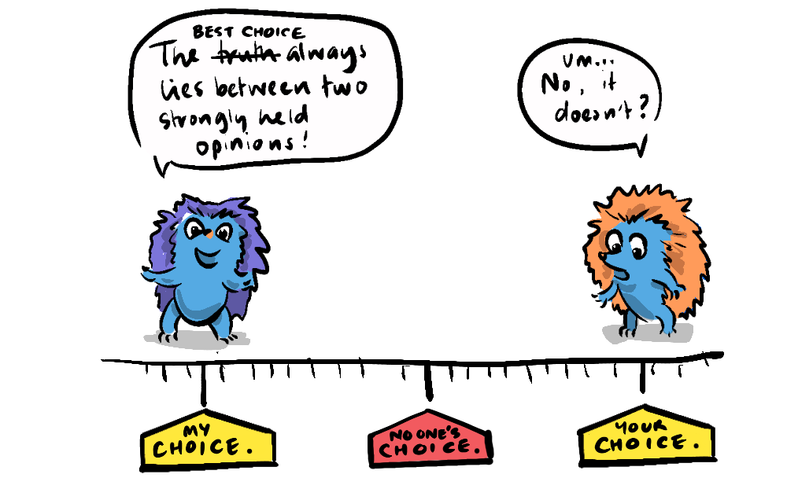
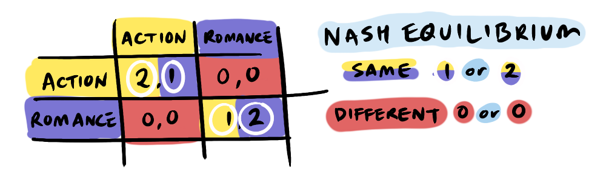
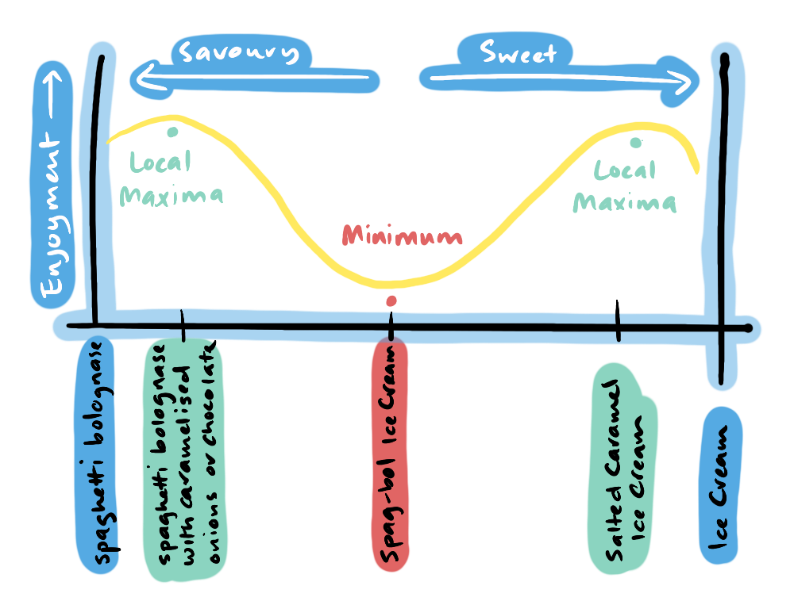
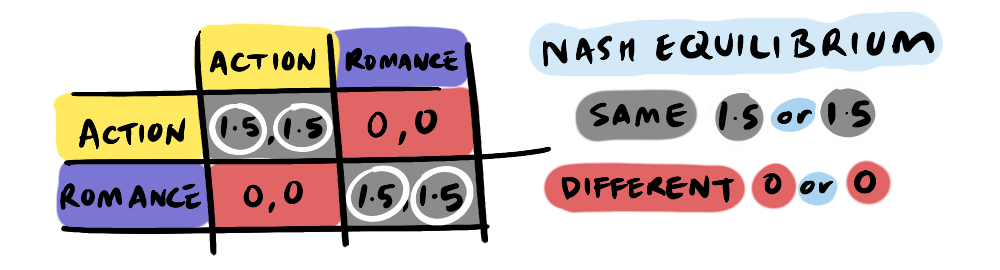

Every Friday our family settles in for family movie night—it's the highlight of the week, especially for the person who's "turn" it is—my wife, daughter and I take turns sharing a movie we love.
When we began sharing movies it was somewhat ad-hoc and invited long-winded and sometimes heated debates over which movie to see, often we'd end up with a choice by committee with no one being particularly satisfied.
Our eventual decision to take turns reflects the conclusions of game theory's...
With the addition of some outdated tropes about the different sort of movies women and men supposedly like, the battle of the sexes is essentially the same situation as our movie night:
A boyfriend wants to watch an action movie, a girlfriend a romantic comedy, how do they choose what to watch?
This classic scenario can be illustrated with a payoff matrix:
What we see here is, while there are uneven payoffs for both choosing action or romance, there is no payoff for disagreement, resulting in no movie. The distinction between the two levels of goals here can be understood in terms of absolute and relative value—watching a movie together (absolute value) and choosing the movie (relative value).
There are two pure‑strategy Nash Equilibria: (Action, Action) and (Romance, Romance) as these are the only options that return any payoff. Each player would rather coordinate than go alone, but each prefers a different coordinated option. We can think of two poles as local maxima divided by a minimum compromise option. Here's a spaghetti-themed not-real-graph to illustrate.
As with many game theory scenarios, it's important to play the scenario out over several rounds. In this case, iteration doesn't affect the Nash Equilibrium, because it is also Pareto Efficient, it is never advisable to split the difference in this game—both will be worse off. However, iteration does help to inform us about what is fair in terms of relative value. Because the uneven payoffs (2,1) and (1,2) mirror each other, taking turns is a clear way to balance the payoffs.
Now, movie choice and spaghetti might seem frivolous to explore in game theory, given the stakes are so low. But what happens when that movie is the choice between what side of the road you're going to drive on, or how child custody is allocated after a divorce.
For some situations the iterated game will favour a turn-based solution, whereas in others, there may be a prohibitive cost to switching.
These are situations where there are equal rights and interests in both options, but simultaneous sharing is not possible.

- Child custody between divorced parents
- Time allocation using the Deep Space network antenna (time cannot be shared, so users bid for time-blocks)
- Leadership of the UN Security Council (rotates through its member states in alphabetical order)
- Olympic Games hosting (is determined via a voting system)
These are situations where simultaneous sharing is not possible but there is a high cost to switching between different options, and there may be less vested interests.
- What side of the road to drive on (switching would lead to confusion, and the choice is arbitrary anyway)
- Using the Imperial or Metric system (just number units, but they don't mix)
- Household mains standards: 60 Hz, 120 V or 50 Hz, 220‑240 V (imagine needing multiple adapters within your own country or even your own household—not feasible)
As a documentary editor, I sorely wish the industry could have a Battle of the Sexes discussion to standardise video formats. The headache of mixed frame-rates—23.976, 24, 25, 29.97, 50 and different frame behaviours; variable, interlaced, progressive, dropframe, non-dropframe—is a product of strong historical inertia, though I'm hopeful it's a problem we can actually solve, through coordination.
Unfortunately, not all Battle of the Sexes games can be resolved so easily. In some cases, alternating simply isn’t possible—because the decision is irreversible and involves strong vested interests. Consider a couple deciding where to live when both have careers rooted in different cities, or two parents negotiating which religion to raise their child in. In the realm of politics, while we have the election cycle which enables turn-taking, an issue like Brexit couldn’t be taken for a spin and reversed next term; it demanded a one-time, all-in choice.
The Battle of the Sexes is pretty clear cut:
- If there are not vested interests, make a choice and stick with it
- If there are vested interests and the ability to alternate, take turns
- If there are vested interests and no ability to alternate... hard luck.
For our movie night, the choice is simple, no bargaining, no swapping, the turn-bearer reigns! Sometimes it's a hit, sometimes a miss, but the system largely works, and every now and again a favourite movie of one person becomes a new favourite of someone else, who otherwise might never have watched it—a win-win.